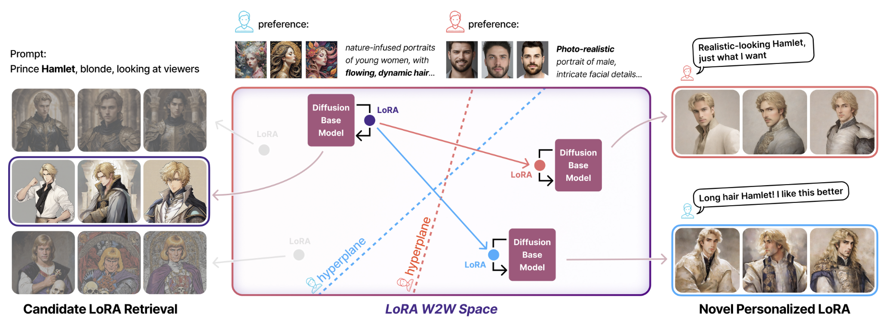

Zhuoran (Jolia) Chen
Legally known as 陈卓然 (Chen, Zhuoran)
Incoming Robotics PhD @ Georgia Tech · NYU Shanghai '26 · Robotics
I'm a Computer Science student at NYU Shanghai, graduating May 2026, and an incoming Robotics PhD student at Georgia Institute of Technology, advised by Prof. Siddharth Karamcheti. My research broadly focuses on human-centered robot learning, exploring how robots can learn from, adapt to, and collaborate with people. I am particularly interested in making robot behavior more intuitive, personalized, and aligned with human needs.
Currently I work with Prof. Shengjie Wang at NYU Shanghai on injecting in-context learning into vision-language-action models for long-horizon tasks. Previously I was at NYU's GRAIL Lab with Prof. Lerrel Pinto, building systems where robots learn force-sensitive manipulation from human touch. I also worked with Prof. Hongyi Wen at NYU Shanghai's MAPS Lab, where I focused on personalized recommendation system and conducted research on human-in-the-loop image generation.
Outside the lab, I enjoy city walks, playing badminton, and capturing everyday moments through writing, photography, and painting.
News
Publications
* denotes equal contribution
RUKA-v2: Tendon-Driven Open-Source Dexterous Hand with Wrist and Abduction for Robot Learning
Lack of accessible and dexterous robot hardware has been a significant bottleneck to achieving human-level dexterity in robots. Last year, we released Ruka, a fully open-sourced, tendon-driven humanoid hand with 11 degrees of freedom — 2 per finger and 3 at the thumb — buildable for under $1,300. Despite these contributions, Ruka lacked two degrees of freedom essential for closely imitating human behavior: wrist mobility and finger adduction/abduction. In this paper, we introduce Ruka-v2: a fully open-sourced, tendon-driven humanoid hand featuring a decoupled 2-DOF parallel wrist and abduction/adduction at the fingers. The parallel wrist adds smooth, independent flexion/extension and radial/ulnar deviation, enabling manipulation in confined environments such as cabinets. Abduction enables motions such as grasping thin objects, in-hand rotation, and calligraphy. We evaluate Ruka-v2 against Ruka through user studies on teleoperated tasks, finding a 51.3% reduction in completion time and a 21.2% increase in success rate. We further demonstrate its full range of applications for robot learning: bimanual and single-arm teleoperation across 13 dexterous tasks, and autonomous policy learning on 3 tasks.
Feel the Force: Contact-Driven Learning from Humans
Controlling fine-grained forces during manipulation remains a core challenge in robotics. While robot policies learned from robot-collected data or simulation show promise, they struggle to generalize across the diverse range of real-world interactions. Learning directly from humans offers a scalable solution, enabling demonstrators to perform skills in their natural embodiment and in everyday environments. However, visual demonstrations alone lack the information needed to infer precise contact forces. We present FeelTheForce (FTF): a robot learning system that models human tactile behavior to learn force-sensitive manipulation. Using a tactile glove to measure contact forces and a vision-based model to estimate hand pose, we train a closed-loop policy that continuously predicts the forces needed for manipulation. This policy is re-targeted to a Franka Panda robot with tactile gripper sensors using shared visual and action representations. At execution, a PD controller modulates gripper closure to track predicted forces — enabling precise, force-aware control. Our approach grounds robust low-level force control in scalable human supervision, achieving a 77% success rate across 5 force-sensitive manipulation tasks.

ImageGem: In-the-Wild Generative Image Interaction Dataset for Generative Model Personalization
We introduce ImageGem, a dataset for studying generative models that understand fine-grained individual preferences. We posit that a key challenge hindering the development of such a generative model is the lack of in-the-wild and fine-grained user preference annotations. Our dataset features real-world interaction data from 57K users, who collectively have built 242K customized LoRAs, written 3M text prompts, and created 5M generated images. With user preference annotations from our dataset, we were able to train better preference alignment models. In addition, leveraging individual user preference, we investigated the performance of retrieval models and a vision-language model on personalized image retrieval and generative model recommendation. Finally, we propose an end-to-end framework for editing customized diffusion models in a latent weight space to align with individual user preferences. Our results demonstrate that the ImageGem dataset enables, for the first time, a new paradigm for generative model personalization.
Publications
* denotes equal contribution
RUKA-v2: Tendon-Driven Open-Source Dexterous Hand with Wrist and Abduction for Robot Learning
Lack of accessible and dexterous robot hardware has been a significant bottleneck to achieving human-level dexterity in robots. Last year, we released Ruka, a fully open-sourced, tendon-driven humanoid hand with 11 degrees of freedom — 2 per finger and 3 at the thumb — buildable for under $1,300. Despite these contributions, Ruka lacked two degrees of freedom essential for closely imitating human behavior: wrist mobility and finger adduction/abduction. In this paper, we introduce Ruka-v2: a fully open-sourced, tendon-driven humanoid hand featuring a decoupled 2-DOF parallel wrist and abduction/adduction at the fingers. The parallel wrist adds smooth, independent flexion/extension and radial/ulnar deviation, enabling manipulation in confined environments such as cabinets. Abduction enables motions such as grasping thin objects, in-hand rotation, and calligraphy. We evaluate Ruka-v2 against Ruka through user studies on teleoperated tasks, finding a 51.3% reduction in completion time and a 21.2% increase in success rate. We further demonstrate its full range of applications for robot learning: bimanual and single-arm teleoperation across 13 dexterous tasks, and autonomous policy learning on 3 tasks.
Feel the Force: Contact-Driven Learning from Humans
Controlling fine-grained forces during manipulation remains a core challenge in robotics. While robot policies learned from robot-collected data or simulation show promise, they struggle to generalize across the diverse range of real-world interactions. Learning directly from humans offers a scalable solution, enabling demonstrators to perform skills in their natural embodiment and in everyday environments. However, visual demonstrations alone lack the information needed to infer precise contact forces. We present FeelTheForce (FTF): a robot learning system that models human tactile behavior to learn force-sensitive manipulation. Using a tactile glove to measure contact forces and a vision-based model to estimate hand pose, we train a closed-loop policy that continuously predicts the forces needed for manipulation. This policy is re-targeted to a Franka Panda robot with tactile gripper sensors using shared visual and action representations. At execution, a PD controller modulates gripper closure to track predicted forces — enabling precise, force-aware control. Our approach grounds robust low-level force control in scalable human supervision, achieving a 77% success rate across 5 force-sensitive manipulation tasks.
ImageGem: In-the-Wild Generative Image Interaction Dataset for Generative Model Personalization
We introduce ImageGem, a dataset for studying generative models that understand fine-grained individual preferences. We posit that a key challenge hindering the development of such a generative model is the lack of in-the-wild and fine-grained user preference annotations. Our dataset features real-world interaction data from 57K users, who collectively have built 242K customized LoRAs, written 3M text prompts, and created 5M generated images. With user preference annotations from our dataset, we were able to train better preference alignment models. In addition, leveraging individual user preference, we investigated the performance of retrieval models and a vision-language model on personalized image retrieval and generative model recommendation. Finally, we propose an end-to-end framework for editing customized diffusion models in a latent weight space to align with individual user preferences. Our results demonstrate that the ImageGem dataset enables, for the first time, a new paradigm for generative model personalization.
Experience
Research Experience
- VLA models + in-context learning for long-horizon robotic tasks
- Feel the Force (co-first author)
- RUKA-v2 teleoperation system
- ImageGem (second author)
- Human-in-the-Loop Image Generation user study
Teaching Experience
Awards & Honors
Course Projects
Style Unlearning: Parameter-Efficient Modules for Efficient Style Removal
CSCI-GA 2271 Computer Vision · Prof. Saining Xie
NYU · Fall 2024
Compared W2W framework vs LoRA Negation for style unlearning; verified with CLIP + VLM metrics.
Computer Graphics Final Project
CSCI-GA 2270 Computer Graphics · Prof. Ken Perlin
NYU · Fall 2024
Interactive 3D web app using raw WebGL — 3D modeling, animation, real-time rendering.
Evaluation Methods on Text Summarization
CSCI-SHU 376 Natural Language Processing · Prof. Chen Zhao
NYU Shanghai · Spring 2024
Evaluated GPT-3.5/4 summarization with ROUGE, BERTScore, and human assessment.
Audio Classification using Deep Learning
CSCI-SHU 360 Machine Learning · Prof. Yik-Cheung Tam
NYU Shanghai · Spring 2024
End-to-end audio classification with Mel spectrograms, MFCCs, CNN models — 79.6% test accuracy.
Multi-function Chat System with GUI
CSCI-SHU 101 Introduction to Computer and Data Science · Prof. Xianbin Gu
NYU Shanghai · Fall 2023
GUI chat app with RSA encryption, login, ELO image rating, PyGame Flappy Bird module.
Misc
The non-academic side of me.
Tags: ✝️ | ENFJ
Interests
Speaking Languages
Portrait
painted by my sister ♥
揾我倾偈 (wan2 ngo5 keng1 gai2) · Open to Chat
I set aside 1 hour each week for anyone who wants to talk — research directions, PhD applications, life abroad, robotics, or genuinely anything. No agenda needed. Send me an email and we'll find a time 😄.
zc2745@nyu.edu找我散步 · Let's take a walk
If you are in Shanghai and want to explore a neighbourhood, or just walk and talk — send me an email. Always down :)
zc2745@nyu.eduFriends
Shout out to my wonderful friends 🫶